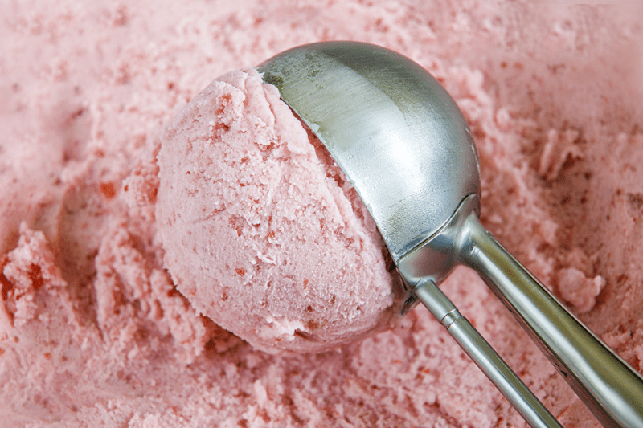

Troubleshooting Raw Ice Cream
Over the past decade, I have made a lot of raw vegan ice cream. I am far from becoming a master at it, but it’s fun to make when the cravings hit. I have compiled a handful of troubleshooting issues that have popped up through my own experiences. If you have any further “issues” that you would like to see addressed, please don’t hesitate to leave a comment below and I will look into them. So, it’s a good idea to periodically pop back in and revisit this posting for updates.

Why is my Ice Cream Harder than Store Bought?
- Homemade ice cream usually contains much less air than the stuff you buy in the store. Air keeps ice cream soft. So the less there is, the harder your ice cream.
- Ice creams that are lower in fat or sugar will create harder ice cream. Fat doesn’t freeze, and sugar lowers the freezing temperature of the water in our mixes. So they both keep our ice cream soft. So if you decide to reduce the fat or sugar from another person’s recipe, be prepared for different results and don’t blame the recipe creator.
My Ice Cream isn’t Sweet Enough
The obvious answer would be to add more. But that doesn’t help you understand why your ice cream may not be sweet enough, even though you feel you put in enough. Through my experience there are several factors, allow me to address them.
Frozen Taste Buds
- You felt the recipe created by another person had too much, so you cut it back. When we eat foods that are frozen or super cold, it numbs our taste bud receptors, which dulls down the sweet flavors in ice cream. As a test, take some of the ice and let it sit at room temperature until it just starts to soften. Now take a bite of the frozen ice cream, then take a bite of the soft ice cream. You just might notice that the softer ice cream tastes a bit sweeter.
Your Taste Buds Register Flavors Differently
- You have a sweet tooth far greater than the recipe designer. Let’s face it, when it comes to following recipes made by others, tweaks are going to happen. We all taste food differently. Some people love stronger flavors while others are sensitive to them. Don’t be quick to negatively judge the recipe designer. This is exactly why I always push in my recipes for people to taste test as they build my recipes.
- As a test, (this plays off of the numb taste buds comment above), allow the ice cream to sit at room temperature for around fifteen minutes to give it a chance to “warm” up a bit. Then taste it and see if you still feel the same way.
Combine Sweeteners
- One trick that I have learned through the years with all my sweet recipes is that I like to use a combination of sweeteners.
- Example #1 – dates (sweetener/thickener/binder) + liquid stevia (brightens the sweetness of the dates)
- Example #2 – maple syrup (volume/sweetener) + liquid stevia (brightens the maple sweetness without having to add more sugars)
My Ice Cream is Chewy
- In raw ice cream, I find that this happens when I over-churn the batter in the ice cream machine.
- Don’t leave the machine unattended. Keep peeking in to see how the texture is shifting. The ice cream machine is all about adding air. The longer it goes past its due time, the denser it becomes.
- Follow the manual that comes with the machine you are using.
My Ice Cream has large Ice Crystals
Ice cream that has large ice crystals forming occurs by not starting out with a cold enough ice cream batter, moved too slow in getting it in the freezer, thawing and refreezing, by storing the ice cream in the front of the freezer, and by not having enough fat in the recipe. Below I will explain how to combat these issues.
Freeze the bowl
- The freezer bowl must be completely frozen before you begin your recipe.
- The length of time needed to reach the frozen state depends on how cold your freezer is.
- Store the freezer bowl in the freezer at all times that way you can take it out any time for immediate use.
- In general, the freezing time is between 6 hours and 22 hours.
- To determine whether the bowl is completely frozen, shake it. If you do not hear liquid moving, the cooling liquid is frozen.
- Before freezing, wash and dry the bowl. Wrap it in a plastic bag to prevent freezer burn.
- I recommend that you place the freezer bowl in the back of your freezer where it is coldest.
- The bowl will begin to defrost once it has been removed from the freezer. Use it immediately after removing from freezer.
- Freezing fast will help maintain the size of the ice crystals.
Prechill the Ice Cream Mixture
- The mix should be nice and chilled before adding it to the ice cream machine.
- Chilling the ice cream slurry and having the bowl frozen solid gives your machine a head start. It will freeze the mixture faster so it will spend much less time in the machine and the ice crystals will be smaller.
- I make most of my ice cream batters in the blender, so once I have all the ingredients blended, I slide the blender jar into the fridge or freezer (if pressed for time) until it is nice and cold. If you do put it in the freezer, set a timer to help you remember when to take it out.
Ice Cream Storage
- It is best to store your ice cream in the BACK of the freezer to help prevent ice crystals. Every time you open the freezer door, warm air is ushered in.
- My favorite way to package ice cream is in small enough containers that the whole thing can be eaten in one sitting. That way, you don’t subject the entire batch to thermal shock. When using larger containers, moving the ice cream, allowing it to soften so you can scoop out a single-serving, and then returning it to the freezer allows for ice crystals to collect and expand.
- If you are using a large container, cover the SURFACE of the ice cream with a piece of wax or parchment paper which will reduce the amount of air touching the ice cream.
Fat Content in the Recipe
- 100% fat doesn’t freeze, so the higher the fat content in your ice cream, the softer it will be, with fewer ice crystals. The more you cut back on fats being used in the recipe, the harder it will be.
Click (here) for some delicious ice cream recipes!
© AmieSue.com